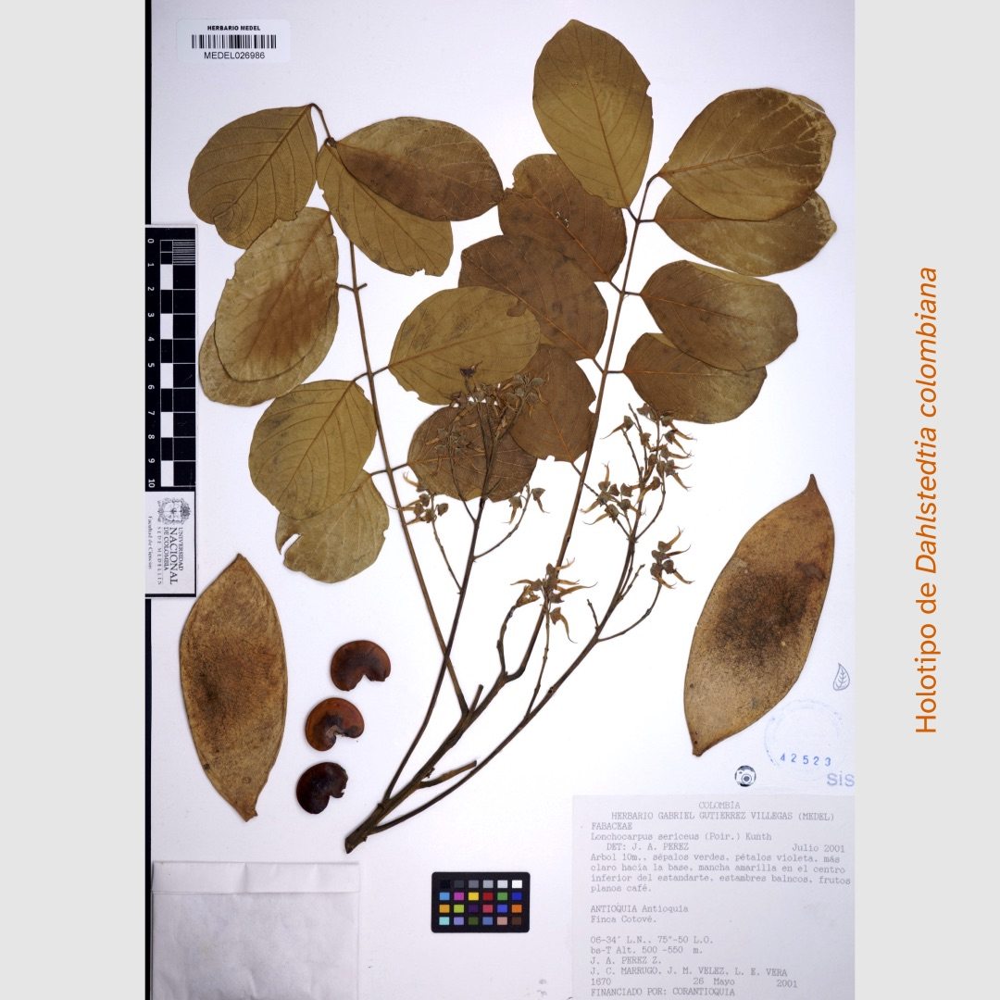
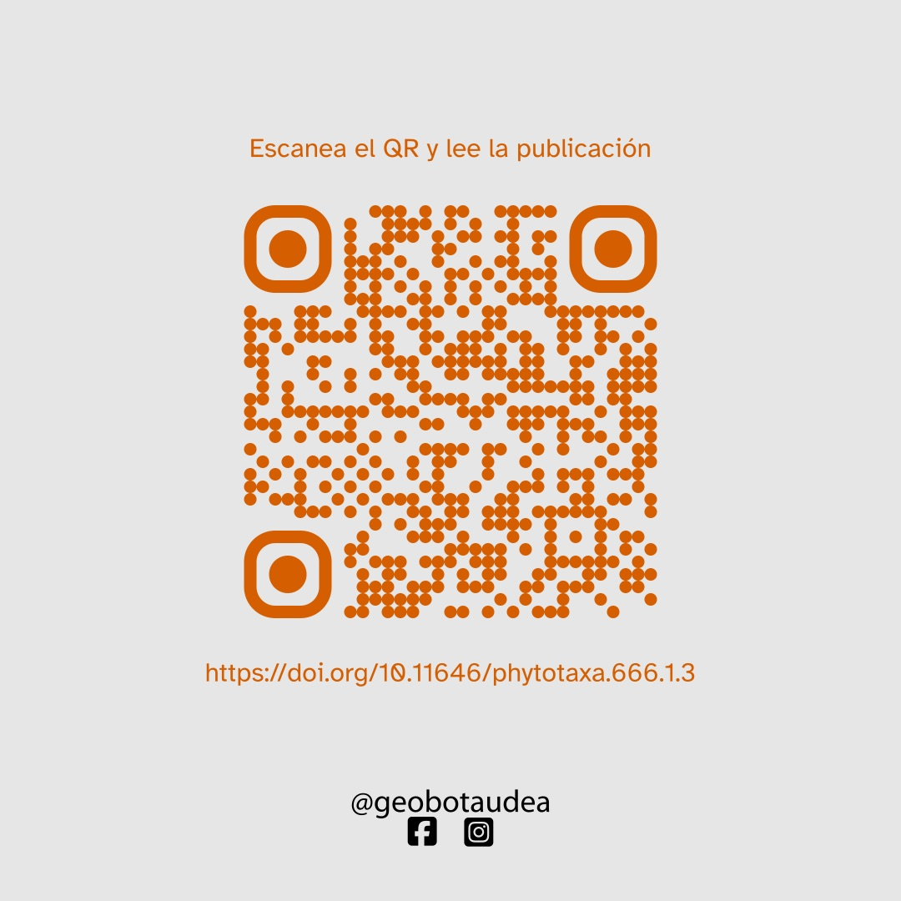

¡Nueva especie de planta para Colombia!
En el marco de estudios recientes en la familia Fabaceae (fabáceas o leguminosas), nos complace anunciar la publicación en la revista Phytotaxa del artículo “Dahlstedtia colombiana (Millettieae, Papilionoideae, Fabaceae), a new species and first record of the genus from Colombia and its Seasonally Tropical Dry Forest” por nuestros estudiantes de maestría, Ana María Trujillo López y Yeison Londoño Echeverri, junto al profesor William Ariza-Cortés de la Universidad Distrital Francisco José de Caldas.
![La imagen muestra en el centro una captura de pantalla de la primera página del artículo científico ‘Dahlstedtia colombiana (Millettieae, Papilionoideae, Fabaceae), a new species and first record of the genus from Colombia and its Seasonally Tropical Dry Forest’ publicado en la revista Phytotaxa por Ana María Trujillo-López, William Ariza-Cortés y Yeison Londoño-Echeverri. La imagen tiene un fondo claro. En la esquina superior derecha, sobre un fondo rojo aparece en negro la palabra «GEOBOTA». En la esquina inferior izquierda sobre un fordo rojo aparece en negro la palabra «PUBLICACIÓN». En la esquina inferior derecha aparecen en blanco los logotipos de Facebook e Instagram de @geobotaudea.](images/image_01.jpeg)
Dahlstedtia colombiana Esta nueva especie de planta, perteneciente a la familia de las fabáceas, se encuentra en los bosques secos tropicales de los valles del Río Magdalena y Río Cauca. Es la primera especie del género Dahlstedtia registrada para Colombia. El estudio describe aspectos importantes como su distribución geográfica, fenología, estado de conservación y afinidades taxonómicas.

Este artículo también presenta dos interesantes curiosidades: 1. Algunos especímenes de Dahlstedtia colombiana fueron colectados durante la Real Expedición Botánica del Nuevo Reino de Granada (finales del siglo XVIII e inicios del XIX) liderada por José Celestino Mutis. ¡Un verdadero tesoro botánico que ha sido redescubierto! 2. En la Universidad de Antioquia, hay dos individuos de esta nueva especie sembrados entre los bloques 9 y 10. ¡Te invitamos a visitarlos!
![La imagen es un collage de seis fotografías etiquetadas de la A a la F, cada una mostrando diferentes partes de una especie de planta. A: Ramas con hojas verdes con la luz del sol filtrándose a través de ellas. B: Flores moradas en una inflorescencia. C: Vainas de semillas marrones colgando de las ramas. D: Componentes individuales de la flor morada desarmados y medidos contra una escala. E: Un fruto y una semilla. Al lado un texto que dice: «Dahlstedtia colombiana: A. Ramas vegetativas, B. Inflorescencia, C. Rama fructífera, D. Flor, E. Fruto y semilla».](images/image_03.jpeg)
Este hallazgo destaca la importancia del bosque seco tropical, uno de los ecosistemas más amenazados de Colombia, y sugiere que aún hay muchas maravillas por descubrir.
¿Te animas a conocer más sobre estas fabulosas plantas?

Enlace al artículo: https://doi.org/10.11646/phytotaxa.666.1.3
¡Síguenos para mantenerte al tanto de nuestras investigaciones y publicaciones!
Volver arribaCómo citar
@online{espinosa-correa2024,
author = {Espinosa-Correa, Álex},
title = {¡Nueva especie de planta para Colombia!},
date = {2024-10-02},
url = {http://geobota.github.io/news/2024-10-02_publicacion/},
langid = {es}
}